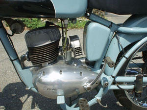
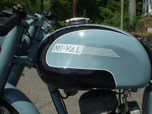

|
|
Motociclo
MI-VAL 125 cc "GSa"
|
|
Esemplare di Giuseppe Rebora della provincia di Genova
Cliccare sulle immagini per ingrandire
|
Vista lato sinistro |
Vista anteriore |
Vista lato destro |
|  Vista motore |
 Serbatoio |
Cliccare sulle immagini per ingrandire